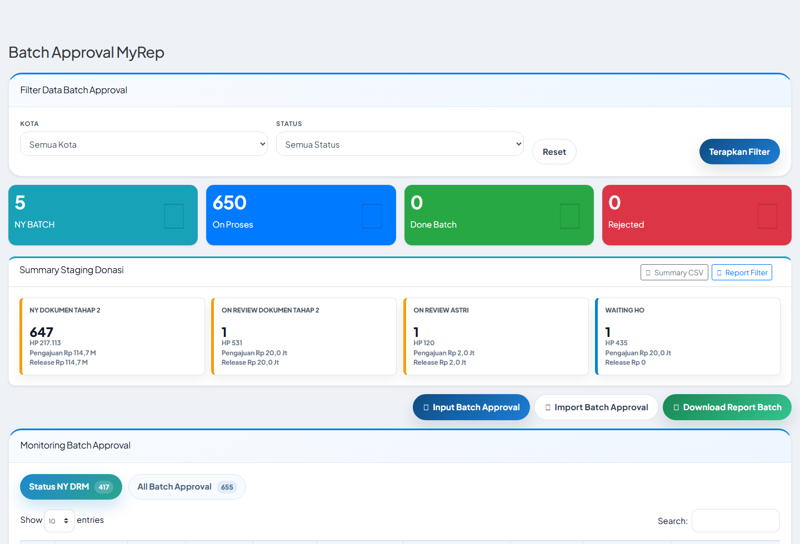
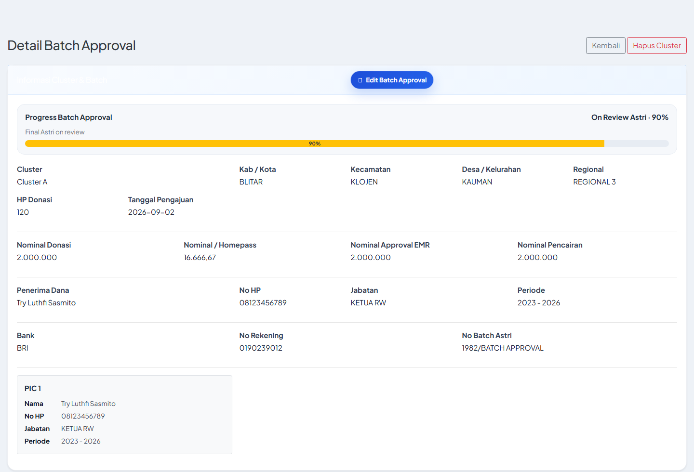

Manual Book MyRep
Batch Approval Donasi Astri & Zeyn
Panduan operasional modul Batch Approval terbaru, termasuk flow kerja, staging, dokumen, approval SITAC/Finance, update Astri, PO, Invoice, dan aturan revisi dokumen.
1. Ringkasan Modul
Batch Approval MyRep mengatur pengajuan donasi sejak input batch dari Area/SITAC HO, verifikasi dokumen Zeyn, approval internal SITAC dan Finance, pencairan donasi, upload dokumen pasca bayar, submit Astri, PO Donasi, hingga Invoice Donasi.
Prinsip kontrol utama: finance baru dapat mencairkan dana setelah dokumen pra-finance lengkap dan approved. Setelah pembayaran, dokumen pasca bayar juga dikunci melalui approval sebelum proses final Astri, PO, dan invoice.
2. Flow Kerja Utama
1. Input BatchArea atau SITAC HO input batch, nomor batch Astri, tanggal approval, nominal donasi, dan data penerima.
2. Dokumen Tahap 1Area upload dokumen pra-finance Zeyn. Screenshot memakai upload gambar.
3. Approval SITACSITAC HO approve/reject per dokumen atau approve all.
4. Approval FinanceFinance HO approve/reject dokumen wajib setelah SITAC approved.
5. Ajukan FinanceSITAC HO mengajukan pencairan memakai Nominal Approval EMR.
6. Set ReleasedSITAC HO isi tanggal release, nominal release, dan bukti transfer gambar.
7. Dokumen Tahap 2Area upload dokumen setelah pembayaran, lalu SITAC dan Finance approve.
8. Astri, PO, InvoiceSITAC update Astri per dokumen/bulk. Jika semua Astri approved, lanjut PO dan Invoice.
3. Screenshot Menu

Daftar Batch Approval dan ringkasan staging.

Halaman detail Batch Approval dengan ringkasan, pencairan, SLA, dan dokumen.
4. Staging dan Kondisi
| Staging | Kondisi Pemakaian | Aksi Berikutnya |
|---|
| NY Dokumen Tahap 1 | Batch sudah dibuat dan menunggu upload dokumen pra-finance. | Area upload dokumen tahap 1. |
| On Review Dokumen Tahap 1 | Dokumen tahap 1 sudah full upload, menunggu review SITAC. | SITAC approve/reject. |
| On Review Finance Dokumen Tahap 1 | Dokumen tahap 1 sudah approved SITAC, menunggu approval Finance. | Finance approve/reject. |
| Approved Finance Dokumen Tahap 1 | Dokumen tahap 1 sudah approved SITAC dan Finance. | SITAC klik Ajukan ke Finance. |
| Menunggu Pembayaran Finance | Pengajuan finance sudah dilakukan. | Set Released setelah dana cair. |
| Donasi Dibayarkan | Finance sudah release pembayaran. | Area upload dokumen tahap 2. |
| On Review Dokumen Tahap 2 | Dokumen tahap 2 sudah full upload, menunggu review SITAC. | SITAC approve/reject. |
| On Review Finance Dokumen Tahap 2 | Dokumen tahap 2 sudah approved SITAC, menunggu approval Finance. | Finance approve/reject. |
| Menunggu Submit Astri | Dokumen tahap 2 sudah approved Finance dan siap update Astri. | Update Astri per dokumen atau bulk. |
| On Review Astri | Ada dokumen dikirim/review Astri atau ada dokumen Astri rejected. | Jika rejected, Area upload revisi dan SITAC review ulang. |
| Approved Astri | Semua dokumen wajib tahap 1 dan tahap 2 sudah approved Astri, tanpa rejected. | Tambah PO Donasi. |
| PO Donasi | PO Donasi sudah dibuat. | Lengkapi invoice. |
| Invoice | Invoice donasi sudah dibuat. | Monitoring selesai untuk flow donasi. |
| Hold / Rejected | Batch ditahan atau ditolak pada level batch. | Perlu tindak lanjut manual sesuai remark. |
Jika salah satu dokumen Astri berstatus rejected, staging tidak boleh menjadi Approved Astri walaupun dokumen lain sudah approved.
5. Dokumen Wajib
Dokumen Tahap 1 Pra-Finance Zeyn
- Screenshot Evidence Upload DRM di Astri gambar
- Screenshot Buku Rekening Penerima Dana gambar
- Surat Ijin RT/RW
- Form Cluster Survey
- BAP Open
- BAP SND & SND Kasar
- Cluster Approval
- Perjanjian Donasi & Pemberian Izin
- KTP Penerima Donasi
- Dokumentasi CSR Banner
- Dokumentasi Banner Pre Sales
- Dokumentasi Sosialisasi Warga
- Form Free Wifi & KTP opsional
Dokumen Tahap 2 Setelah Pembayaran
- Kwitansi
- Bukti Transfer
- Bukti Penyerahan Dana
Upload dokumen maksimal 20 MB. Screenshot hanya menerima JPG, JPEG, atau PNG. Dokumen tahap 2 menggunakan PDF.
6. Upload dan Review Dokumen

Modal upload dokumen satuan dengan drag and drop.

Reject dokumen memakai modal remark wajib.
- Area dan Super Admin dapat upload dokumen sesuai akses.
- Dokumen approved hanya dapat replace oleh SITAC HO, kecuali revisi akibat Astri rejected.
- Reject SITAC dan Finance wajib remark.
- History dokumen menyimpan upload, reupload, approve, reject, finance approval, dan update Astri.
7. Bulk Astri dan Revisi Astri

Bulk Astri untuk update tanggal submit, status, tanggal approved, dan remark.
- Bulk Astri muncul untuk dokumen yang sudah approved internal.
- Jika status Astri dipilih REJECTED, remark wajib diisi.
- Jika Astri reject dokumen tahap 1 atau tahap 2, status cluster tetap On Review Astri.
- Area upload revisi hanya pada dokumen rejected Astri.
- Setelah upload revisi Astri, dokumen cukup direview ulang oleh SITAC. Approval Finance lama tetap dipertahankan.
- Astri status tetap REJECTED sampai SITAC memperbarui status Astri berikutnya, agar jejak history tetap jelas.
8. Pencairan, PO, dan Invoice
- Ajukan ke Finance memakai Nominal Approval EMR.
- Tanggal pengajuan finance diambil dari waktu tombol diklik.
- Set Released memakai tanggal release, nominal release, dan bukti transfer gambar.
- PO Donasi terhubung dengan bowheer PT EMR - DONASI, 1 term 100%.
- Form PO/Invoice dibuka lewat modal, bukan inline di halaman.

Modal PO/Invoice Donasi.